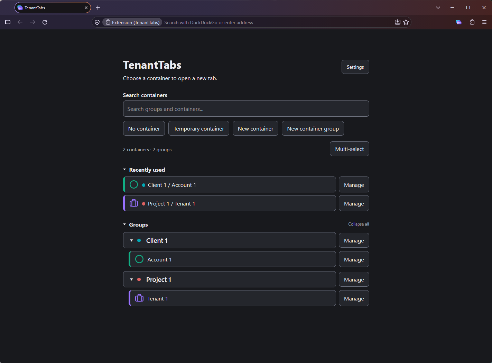

Native containers
Choose an existing container, create a new one or continue without a container. Firefox provides the isolation.
Firefox container management
TenantTabs by Migotech turns your new-tab page into a searchable container chooser. Choose your container, then type straight into Firefox's address bar.
Organise separate browsing contexts using Firefox's native containers, with your favourites, groups and website rules close at hand.
Firefox 148.0 or later required. TenantTabs 1.0.0 is the current published version. Install TenantTabs from Firefox Add-ons.
Choose an existing container, create a new one or continue without a container. Firefox provides the isolation.
Organise containers into groups and quickly return to favourites and recently used containers.
Assign websites to containers and manage routing rules for the browsing contexts you use.
Open a temporary browsing context with configurable cleanup and optional automatic use.
Use optional paid smart placement to organise where container tabs open.
Save and restore your configuration manually. Optional Pro functionality adds automatic backups.

Find, create and reuse your Firefox containers from one convenient interface.
Container management, groups, favourites, recents, website rules, temporary containers and manual backups are included in Free. Pro adds bulk management, smart tab placement, group naming customisation and automatic backups.
Pro activates in the same public extension through verified ExtensionPay licensing, with payments processed by Stripe. Licensing connections require your consent. Free features work without a licensing account. Read the privacy policy or visit support for activation and recovery guidance.